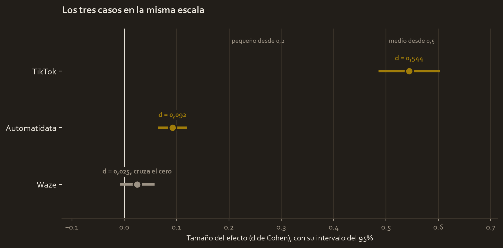

What this module solves
It is where everything before gets cashed in. You choose a company scenario, apply the complete analysis and deliver a strategy document. No new theory.
And since the three cases of this course are already analysed, this module does something none of them could do on its own: put them side by side. That is where it shows that statistics does not give one answer, it gives three kinds of answer, and knowing which one you got is half the job.
Each case has its complete sheet, with the brief, the hypotheses, the figures explained and the business decision:
- Automatidata, New York taxis and the form of payment.
- TikTok, verified accounts and the reach of videos.
- Waze, device type and use of the app.
The three cases, on the same scale

The chart places the effect size of the three, with its confidence interval, on the same axis. The vertical line at zero is the position of "no difference", and the dotted lines mark Cohen's thresholds.
And the three answers are different:
| Case | p-value | Cohen's d | What it means |
|---|---|---|---|
| TikTok | 2.61e-120 | 0.544 | There is a difference and it is of medium size |
| Automatidata | 6.80e-12 | 0.092 | There is a difference but it is negligible |
| Waze | 0.1434 | 0.025 | No evidence of a difference |
Read it from top to bottom and you have the summary of the whole course:
TikTok is the easy case to communicate. Tiny p-value, medium effect, interval far from zero. There is a finding and it deserves action.
Automatidata is the treacherous case. The p-value has twelve zeros and seems to shout that the finding is enormous, but the effect is 0.09, below the threshold of the negligible. The difference exists, it is real, and it is $1.22 per ride. If you present that p without the effect size, you are misleading even if you are not lying.
Waze is the case people think is a failure, and it is not. The interval crosses zero, so there is no evidence of a difference, and that is a complete answer: it tells the product team not to invest in platform-specific development. Saving a project is as valuable as recommending one.
And there is a fourth case, the one of module 5. Two plant shifts with a Cohen's d of 1.26, a large effect, and a p-value of 0.08 that does not reach significance for lack of measurements. That is the quadrant missing from the table: a large effect without enough evidence.
Glossary
- Workplace scenario. The company context, fictional but realistic, on which the course is applied. The three are from different sectors on purpose.
- PACE document. The written deliverable, with the four phases: Plan, Analyze, Construct and Execute. It is what whoever decides reads.
- Executive summary. One page for whoever is not going to open the analysis: finding, evidence, recommendation and limitations.
- Portfolio project. Work meant to be shown. It is judged by whether it is understood, not by whether it is complicated.
- Declared limitation. A weakness of the analysis that you point out yourself before whoever reviews finds it.
Step by step
Step 1. Choose the scenario by sector, not by difficulty
The three are of similar difficulty. What changes is what you will be able to talk about in an interview. Choose the one whose business genuinely interests you and finish it well, instead of doing all three halfway.
Step 2. Write the plan before opening the data file
Half a page: what the business question is, who decides with the answer, what data there is and what data there is not. Writing this first is what stops you fitting the hypothesis to the result later on.
Step 3. Apply the complete procedure, without skipping steps
Explore, check assumptions with Levene, choose the test, run it, and validate the result with at least two backups: repeat it without outliers and add a test that does not assume normality. The three cases of this course follow exactly that sequence, and that is why their conclusions hold up.
Step 4. Report the complete block, never a bare p-value
This is the step that separates coursework from professional work:
| Element | Why it cannot be missing |
|---|---|
| Size of each group | Determines how much confidence the estimate deserves |
| Means and deviations | The raw data everything else comes from |
| Statistic and p-value | The evidence against the null hypothesis |
| Effect size | Tells Automatidata from TikTok, which otherwise look the same |
| Confidence interval | If it crosses zero, no difference has been demonstrated |
| Backup test | Rules out the result being an artefact of the shape or the extremes |
| Limitations | You find them before whoever reviews does |
Step 5. Translate into a sentence someone can act on
"p = 0.03" is not a recommendation. "Card payments leave $1.22 more per ride, with a small effect, so it is worth promoting them without expecting a jump in revenue" is.
Step 6. Declare the limitations yourself
An analysis without declared limitations does not look more solid, it looks less reviewed. If the data is observational, say so: you can claim association, not cause.
The code, in parts
Step 1. Define a function of your own, which is what is new here
So far we have used functions other people wrote. Since step 4 always asks for the same thing, it pays to write ours once and reuse it always.
def reportar(a, b, nombre_a, nombre_b, alpha=0.05):def- From define. It announces that we are creating a new function, not calling an existing one.
reportar- The name we give it. From now on, writing
reportar(...)runs everything that comes below. (a, b, nombre_a, ...)- The parameters: the slots to fill in when using it. Inside the function,
awill mean whatever gets passed in that position. alpha=0.05- A parameter with a default value. If you do not pass it, it is 0.05; if you want another threshold, you put it in and yours rules. Parameters with a default value always go last.
:- A colon again, and the whole body of the function will go indented below, just as in the loop and in the
if.
Step 2. The body, which you already know in full
Everything inside is pieces of the previous modules, lined up.
lev = stats.levene(a, b)
t, p = stats.ttest_ind(a, b, equal_var=False)
dif = a.mean() - b.mean()
se = np.sqrt(a.var(ddof=1) / len(a) + b.var(ddof=1) / len(b))
gl = se**4 / ((a.var(ddof=1) / len(a))**2 / (len(a) - 1)
+ (b.var(ddof=1) / len(b))**2 / (len(b) - 1))
lo, hi = stats.t.interval(0.95, df=gl, loc=dif, scale=se)
junta = np.sqrt(((len(a) - 1) * a.var(ddof=1) + (len(b) - 1) * b.var(ddof=1))
/ (len(a) + len(b) - 2))
d = dif / juntala sangría- These lines carry four spaces because they are inside the function. It is the same mechanism as the loop of module 2: the indentation is what marks membership.
lev.pvalue- When a function returns several named things, they are asked for with a dot. Here the whole result is stored in
levand then its p-value is asked of it. **- Raising to a power.
se**4is the standard error to the fourth. gl- The Welch degrees of freedom. The formula is ugly and does not need memorising; what matters is that they are not simply n minus one when the groups have different variabilities.
( ... \n ... )- An expression can be split across several lines if it is inside parentheses. It is what allows a long formula to stay readable.
(len(a) - 1) * a.var(...)- Here it does weight by the size of each group, unlike the shortcut of module 5, because this function has to work with groups of different sizes too.
Step 3. Print the complete block
print(f"{nombre_a}: n = {len(a)}, media = {a.mean():.2f}")
print(f"{nombre_b}: n = {len(b)}, media = {b.mean():.2f}")
print(f"Levene : p = {lev.pvalue:.4f}")
print(f"Welch : t = {t:.4f}, p = {p:.4f}")
print(f"Diferencia: {dif:.2f} IC 95% [{lo:.2f}, {hi:.2f}]")
print(f"Cohen d : {d:.4f}")
print(f"Veredicto : {'se rechaza H0' if p < alpha else 'no hay evidencia suficiente'}")"Levene : "- The extra spaces are put in by hand so that the colons line up in a column. Aligned output reads much faster.
{'a' if cond else 'b'}- An
ifwritten in a single line, inside the braces. It reads straight through: "this if it holds, otherwise this other". It is the same conditional as in module 5, in compact form. print y no return- This function prints instead of returning. It serves to look at the result, not to keep calculating with it. If you wanted to use the numbers afterwards, it would have to be changed to return them.
Step 4. Use it
reportar(np.array([84, 86, 85, 88, 87]),
np.array([83, 85, 82, 86, 84]),
"Turno dia", "Turno noche")reportar(...)- Here it gets called. The values get placed into the parameters in order: the first array in
a, the second inb, and the two texts in the names. alpha- Not passed, so its default value of 0.05 is used.
Turno dia: n = 5, media = 86.00 Turno noche: n = 5, media = 84.00 Levene : p = 1.0000 Welch : t = 2.0000, p = 0.0805 Diferencia: 2.00 IC 95% [-0.31, 4.31] Cohen d : 1.2649 Veredicto : no hay evidencia suficiente
Seven lines of output instead of a bare p-value. This function is step 4 of the method turned into code, and it can be pasted as is into any new project.
Watch out
- The final project does not ask for a predictive model. It ends in a backed statistical decision, not in a classifier. Do not mix the deliverables.
- The document weighs more than the notebook. An impeccable analysis with a poor document is perceived as a poor analysis, because nobody is going to read your code.
- Every cleaning decision gets documented with the criterion, the number of rows and the percentage. "I cleaned the data" is not a justification.
- A non-significant result is a complete result. Waze proves it. Forcing significance by lowering the threshold after seeing the data would indeed be a failure.
- Reusing the same framework in the three cases is fine. It shows you understood the method and that it is transferable, which is exactly what a portfolio is looking for.
- Do not upload personal data to a public repository. The three scenarios come with user data, and checking that is part of the delivery.
Metallurgical bridge
This closing is the final report of a metallurgical test campaign.
You have done the sampling, the flotation tests and the balances. None of that is delivered raw. What gets delivered is a report with the objective, the methodology, the criteria for discarding tests, the results and a circuit recommendation. The client decides with that, not with your lab notebook.
And the two things a good metallurgical report never leaves out are exactly the two most often forgotten here. The first, which tests you discarded and why, because a report that does not say so raises suspicion: something always gets discarded. The second, how far the validity of the result reaches, that sentence of "these conditions were tested on ore from the north zone, do not extrapolate to the south" which is literally a declared limitation.
The PACE document is your campaign report. The notebook is the lab notebook: indispensable, and not what gets delivered.
Review
The three cases give different answers. What is each one's?
TikTok has a tiny p-value and a medium effect, so there is a difference and it deserves action. Automatidata has an even smaller p-value but an effect of 0.09, negligible, so the difference is real and at the same time almost irrelevant to the business. Waze has a p-value of 0.14 and an interval that crosses zero, so there is no evidence of a difference, which is a useful recommendation: do not invest in platform-specific development. Knowing which of the three cases you have in front of you is half an analyst's job.
Why is the effect size mandatory in the report?
Because without it, Automatidata and TikTok look like the same result. Both have absurdly small p-values, but one has a medium effect and the other a negligible one, and the business decisions that follow are opposite. The p-value only answers whether the difference can be told from chance, and that question depends on the sample size as much as on the phenomenon. The effect size answers the question that really matters, which is whether the difference is big enough to do something about it.
What distinguishes this final project from the final project of the previous course?
The previous course's ended in a visualisation that communicated an exploratory finding. This one ends in a formal hypothesis test that backs a decision with a declared confidence level. The first answers what the data shows, the second whether the observed difference is real and what is worth doing. It is the same working structure, but the construction phase now produces a statistic and an interval instead of a chart.
Your analysis finds no significant difference. How do you present it?
As the result it is, without apologising. I report the p-value, the effect size and the confidence interval, and point out explicitly that the interval includes zero. I add the consideration of statistical power, because not finding a difference with a small sample is not the same as not finding it with a large one: in the two-shifts example of module 5 the effect was large and even so it was not detected, whereas in Waze the effect was also almost nil, which reinforces the conclusion. And I close with the corresponding recommendation, which is often not to invest in something, and that saves money.
Why does declaring limitations not weaken the work?
Because every analysis has them, and the only difference is whether you find them or whoever evaluates you does. Declaring them shows you understand the real scope of your data and pre-empts the first objection of any serious review. In the three cases of this course the main limitation is the same and it carries weight: they are observational studies, not experiments, so one can claim that an association exists but not that a cause does.